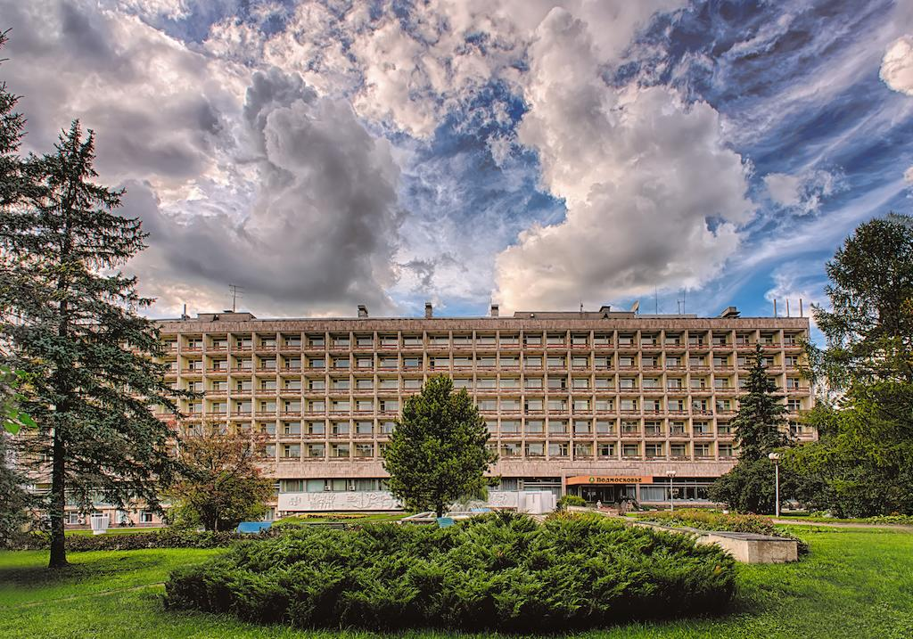
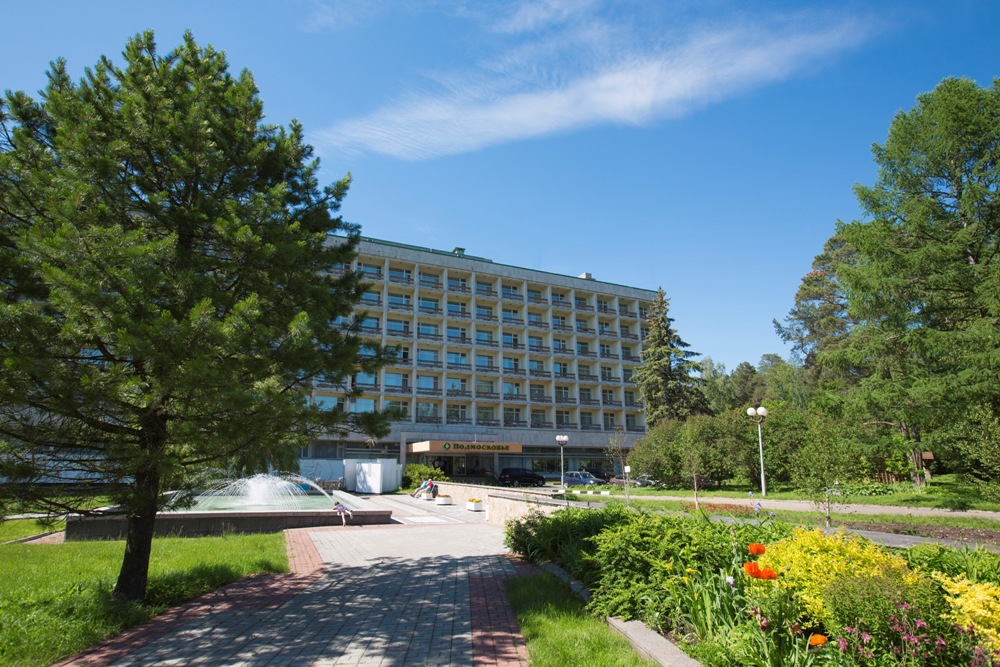
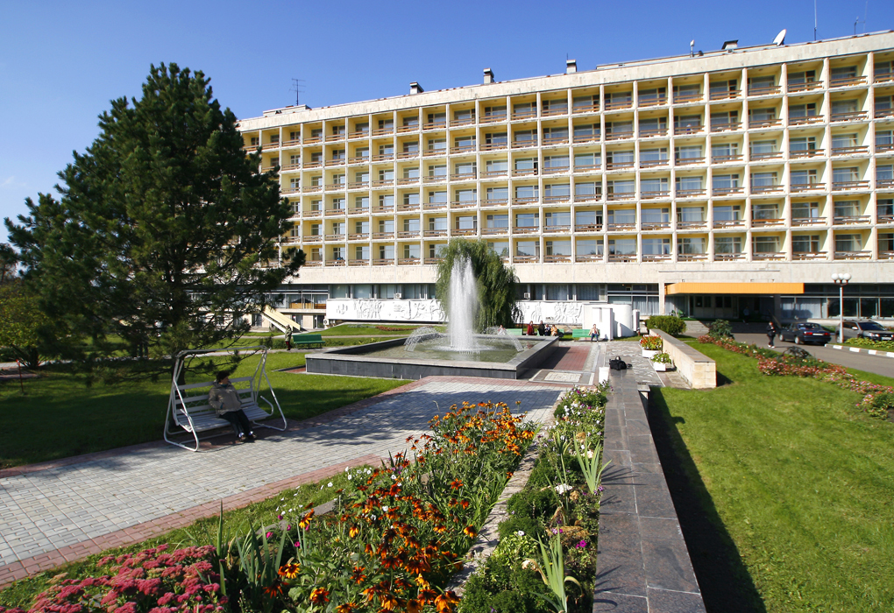

Добро пожаловать в Cafe On Hill!
Добро пожаловать в café on the hill! Мы желаем вам приятного отдыха!
У нас есть есть кафетерий. Мы не совсем обычное кафе, потому что у нас и кафе и пансион для отдыха. У нас вы можете отдохнуть с
замечательным
видом на лес и прекрасной чашкой кофе, а также искупаться в бассейне, совершить прогулку в лес с гидом, посмотреть интересные фильмы по
вечерам или же поиграть в настольные игры.
Приятного времяпрепровождения!
Вот немного фотографий из нашего кафе
  Что мы из себя представляем?
Наше кафе было основано в 1996 году. Изначально наше заведение располагалось в горах, но со временем мы перенесли его на холм и поэтому назвали его café on the hill. Мы очень рады что вы выбрали нас и хотим чтобы вы оставили свой честный отзыв, по поводу нашего заведения. Всегда будем рады новым гостям! В нашем заведении побывали знаменитости. Берите с собой друзей и близких, будет весело!
Если вы решили забронировать место, то вы должны знать:
- Бронирование места нужно делать минимум за день до приезда.
- Отменят заказанную бронь можно.
- Если вы хотите перенести бронь, то вам нужно позвонить по номеру 8 (495)-777-88-20).
- Для детей действует акция! (Если вы желаете приехать с ребёнком его цена будет меньше обычного)
- Скидки первым посетителям 40%